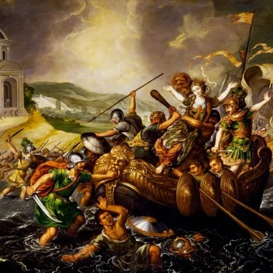

Vênus é o segundo planeta do sistema Solar mais próximo do Sol. Tem cerca de 800 milhões de anos e além do Sol e da Lua é o corpo celeste mais brilhante no céu, motivo pelo qual é conhecido desde a antiguidade. Além disso, é o sexto maior entre todos os outros planetas.
Vênus possui tamanho e massa semelhante a do planeta Terra, por isso os planetas citados eram considerados gêmeos, no entanto, as características parecidas se limitam à proporção corporal. Salvo esse ponto apresentado, os dois planetas são totalmente distintos, uma vez que Vênus não oferece condições para proliferação de vida.
Existem 4 planetas terrestres. Vênus é um deles. Seu brilho peculiar é causado pela pesada atmosfera, que irradia o calor da luz do Sol na superfície. A pressão atmosférica ao nível do mar é 92 vezes maior que a da Terra.
A sua superfície é coberta de lava e composta principalmente de dióxido de carbono e ácido sulfúrico, os quais formam nuvens densas responsáveis pelo fenômeno de efeito estufa. É isso que faz a temperatura aumentar a níveis suficientes para derreter o chumbo.
Pelo menos 97% de composição atmosférica é feita por dióxido de carbono. Há também 3% de nitrogênio e traços de dióxido de enxofre, vapor d'água, monóxido de carbono, argônio, hélio, neônio, cloreto de hidrogênio e fluoreto de hidrogênio.
Embora esteja mais distante do Sol que Mercúrio, a temperatura de Vênus é maior. Lá, ela chega a 482 ºC na superfície devido ao efeito estufa dos componentes do planeta.
Vênus não tem satélites e o seu núcleo é composto por ferro com raio de cerca de 3 mil quilômetros, além de um manto com rocha derretida. A topografia é formada por grandes planícies cobertas por lava e montanhas e regiões montanhosas deformadas pela atividade geológica.
O planeta recebeu esse nome em homenagem à Vênus, a deusa romana da beleza e do amor. Equivalente à Afrodite na mitologia grega.
Na mitologia grega, Afrodite é a deusa do amor, da beleza e da sexualidade. Ela foi considerada a personificação do ideal de beleza dos gregos na Antiguidade. E, na Idade Moderna serviu de inspiração para diversos artistas do Renascimento. Na mitologia romana, Afrodite é correspondente à deusa Vênus.
Tradicionalmente, a ilha de Chipre é o seu local de nascimento, e sua origem ainda era causa de polêmica entre os gregos Isso porque dois grandes poetas gregos, responsáveis por compilar grande parte do conhecimento que temos sobre a mitologia grega, discordavam sobre como ela havia surgido.
A Mitologia Grega aponta que a deusa Afrodite foi originada em detrimento de uma briga entre o deus Cronos e o deus Urano. Com base na versão de Hesíodo, poeta grego da Antiguidade, Cronos em um ato de fúria cortou o órgão genital de Urano e lançou no mar.
Após o órgão cair no oceano foi formada uma espuma e dessa mistura com a água salgada saiu Afrodite. Portanto, de acordo com essa narrativa, ela nasceu a partir de uma ação violenta. Em razão desse conto, o nome Afrodite significa “espuma do mar” ou “nascida da espuma".
Existe, contudo, outra história que conta o nascimento da deusa Afrodite: é a narração de Homero, poeta da Grécia Antiga. Conforme a interpretação dele, essa divindade foi gerada pelo modo natural, ou seja, Afrodite nasceu a partir da união entre Zeus com Dione.
A relação da deusa Afrodite com a Guerra de Troia é bem curiosa. Tudo começou com um concurso, promovido durante o casamento do herói Peleu com a deusa Tétis, para saber quem era a deusa mais bonita. Concorriam Hera, Afrodite e Atena. Cada uma prometeu algum benefício ao juiz, Páris, príncipe de Troia, que acabou escolhendo o suborno oferecido por Afrodite: a mulher mais bonita do mundo.
Porém, a mulher mais bonita do mundo, a semideusa Helena, já era casada, e com ninguém menos do que Menelau, rei de Esparta. Ao final do concurso, Páris foi buscar o seu “presente” – na verdade, foi sequestrar Helena. Revoltado, Menelau, junto de seu irmão Agamenon e outros aliados gregos, partiram para Troia para tentar recuperar Helena. Eis o início da guerra.
A luta ao redor das muralhas de Tróia teve a duração de cera de 10 anos. A famosa “ilíada” trata das seis últimas semanas do último ano de guerra. A ilíada é um longo poema de Homero que traz uma história empolgante sobre o combate em Tróia e serviu como documento religioso para o povo grego que recém tinha saídos da Idade Negra, foi um documento que constituiu a idéia de família olímpica (os deuses do olímpo).